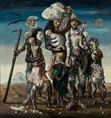

Retirantes

Exposição da obra Lavrador de Café
Cândido Portinari foi um renomado artista plástico brasileiro. Ele é considerado um dos grandes nomes da arte moderna no Brasil e teve uma trajetória artística marcante, contribuindo significativamente para a cultura e identidade visual do país.
Portinari teve uma relação indireta com a Semana de Arte Moderna de 1922, evento que impactou significativamente na história da arte brasileira. Embora ele não tenha participado diretamente da Semana, suas obras posteriores foram influenciadas pelas ideias e propostas inovadoras apresentadas nesse evento. A Semana de Arte Moderna foi um marco na valorização da cultura nacional, na renovação estética e no rompimento com os padrões acadêmicos, buscando uma linguagem artística mais contemporânea.
As obras de Portinari são conhecidas por sua força expressiva e seu compromisso social. Ele abordou temas relevantes como a vida do trabalhador rural, a desigualdade social, a fome e a condição humana. Sua arte era carregada de críticas sociais e políticas, refletindo sua preocupação com as injustiças e a realidade vivida pelos menos favorecidos.
Dentre suas obras mais famosas, destacam-se "Retirantes", pintura que retrata a dura realidade dos migrantes nordestinos em busca de uma vida melhor no sertão brasileiro, e "O Lavrador de Café", que retrata um trabalhador rural em tamanho monumental, simbolizando a importância do trabalho árduo e a valorização da classe trabalhadora.
Além disso, Portinari também produziu obras de temática histórica, como o painel "Guerra e Paz", que representa a luta pela paz e os horrores da Segunda Guerra Mundial. Esse trabalho foi encomendado pela Organização das Nações Unidas (ONU) e está exposto no edifício da Assembleia Geral, em Nova Iorque.
Através de sua arte, Cândido Portinari deixou um legado duradouro, que vai além das fronteiras do Brasil. Suas obras são reconhecidas internacionalmente e contribuíram para a valorização da arte brasileira, tanto no contexto nacional como no cenário global.